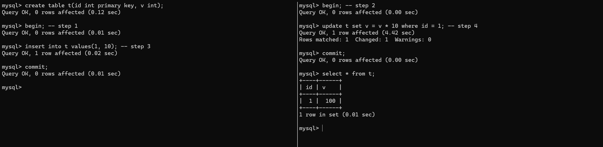
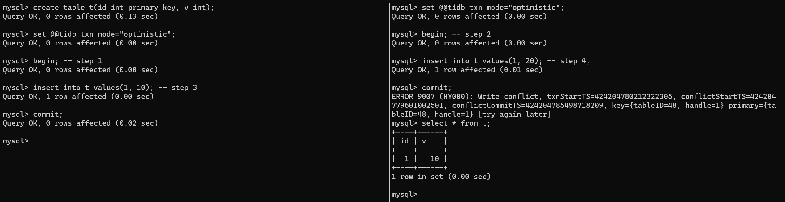

このブログは僕自身の観点から、PingCAPのオフィシャルのドキュメントではありません。
TiDBエンジニアです。今回、TiDB初めての使用することについてが話します。
クラスターを展開する
TiUPで一番小さいのクラスターを展開することはおすすめ。
1 | ~ » curl --proto '=https' --tlsv1.2 -sSf https://tiup-mirrors.pingcap.com/install.sh | sh # TiUPをインストールする |
そして、他のターミナルを開きて、MySQLクライアントでクラスターに接続しましょう。それから、MySQL同じに使うことができまて、試してみてください。
1 | ~ » mysql --host 127.0.0.1 -P4000 -u root |
ノードの種類
クラスターの中で複数のノードはあって、TiDBやPDやTiKVやTiFlashやなど。詳しい情報を知っていることは必要ではない。
- TiDBは計算することを担任して、実際にデータを保有することではありません。その中でオプティマイザーとトランザクションの一部があります。
- PDはターム分配することを担任して、メタデータを保有することができました。
- TiKVはデータの保存するノードで、トランザクションの一部とRaftに基づくのMVCCはあります。高い可用性で、分散トランザクションをサポートするのKVデータベースです。
- TiFlashはOLAP分析しているクエリを専用するのエンジンです。TiDBと同じデータを使用することができて、データを同期は必要がありません。
トランザクション
トランザクションはデータベースの基本的な正しさの保証です。TiDBは二つのトランザクションのモードをサポートして、楽観トランザクションと悲観トランザクションです。その中で、悲観トランザクションはデフォルトで、tidb_txn_modeでセットすることができます。
- 楽観トランザクションで複雑なトランザクションが同一のキーを書くことは許します。お先にコミットするのトランザクションが成功できて、他のトランザクションは失敗します。低い競合の場合は楽観モードが適切です。
- 悲観トランザクションでトランザクションがの実施中はロックを書きますから、コミットは成功することが保証することができます。高い競合の場合は楽観モードが適切です。
先ずは悲観モードを試してみてましょう。テーブルを作った後で、二つのトランザクションをまとめて行って、同じデータを処理しました。画像のなかで、二番目のトランザクションはブロックしました。結果は二つのトランザクションを成功して、順番は左の次に右の。

それで楽観モードを試します。tidb_txn_modeでモードをスイッチして、二つのトランザクションは同じプライマリーキーのデータを作成しました。結果は最初のトランザクションを成功して、他のトランザクションは失敗しました。それは「first commit wins」ルールです。

プロダクションの注意事項
TiUPのplaygroundコマンドはテスト用だけて、データの可用性と安全は保障することはない。
もし、自分でクラスターを操作したなら、TiUPのclusterを使ってください。もしクラウドでTiDB使ってほしいかった、Operatorで展開するおよびTiDBクラウドを使うことができます。
他の質問
もし他の質問があるなら、僕にメートルおよびメッセージを送りましょう。
- メートル：tongmu#pingcap.com
- ツイッター：you06v